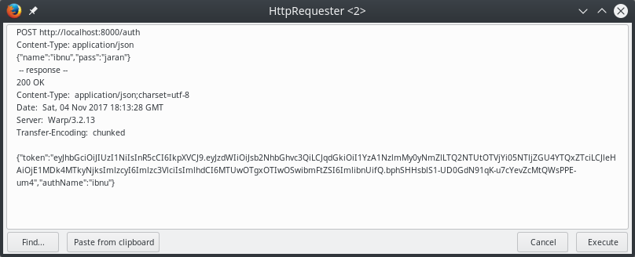
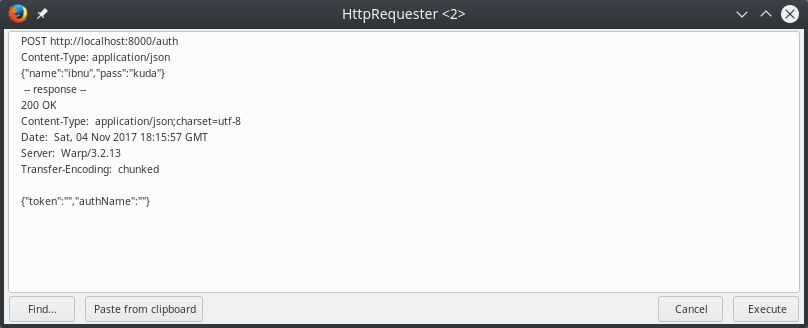
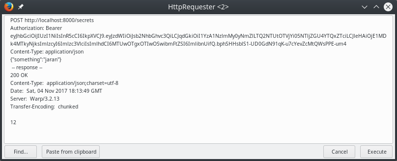
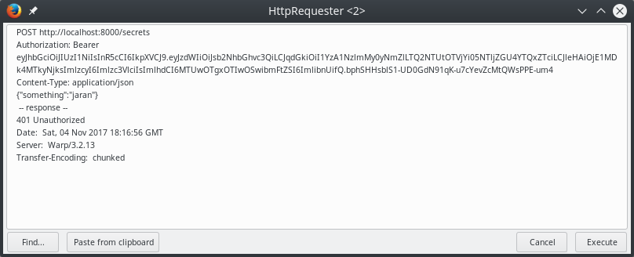
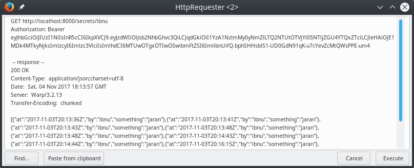
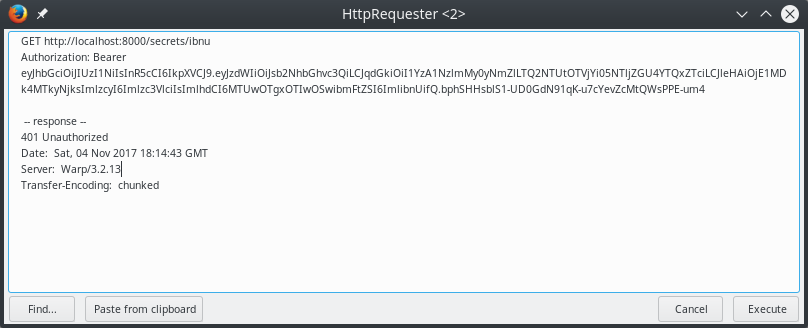

Authorization in Servant: Walkthrough
Words of caution: This article is about servant-server 0.11's experimental-auth which is still in experimental stage.
Deployment in production is not couraged.
And yes, I know about servant-auth but I haven't read it thoroughfully, yet.
One of my friend once complained about the lacks of Servant's documentation on authorization, connecting to db, and many more. So, I want to help him.
Minimum Requirements
- Understands basic haskell.
Final Result
- A working REST interface.
/auth POST -> requesting for jwt token. /secrets POST -> creating new secret. (JWT Auth.) /secrets/:user GET -> get secrets by username. (JWT Auth.) - With authentication using JWT.
- And the program can talk with a database.
- You can look at this repo for the final result.
Prerequisites.
There are a few things that we will use in this article. Namely:
- A running instance of MariaDB or MySQL. This choice was based on observation that in Indonesia, MySQL is more preferable than Postgres, though I personally choose Postgres any over db.
stack. We will use stack because it prevents cabal hell or something, that's what the internet says about it. So we will heed internet's call this time.
A nice to have setup:
- Emacs with haskell mode. It eases our life a bit.
Installation.
We will create a servant project using stack.
A pretty simple command line input will suffice.
Something like this:
stack new OurServant servant
The previous line means that we ask stack to create a new project in folder named OurServant using servant template.
There are many other templates, though.
You can check it out.
It's nice.
Then we will change our directory to our project's directory and open an emacs instance there.
cd OurServant; emacs . -nw
Navigate to OurServant.cabal and then you will see a part like the following:
library
hs-source-dirs: src
exposed-modules: Lib
build-depends: base >= 4.7 && < 5
, aeson
, servant-server
, wai
, warp
default-language: Haskell2010
Then you add dependencies:
textis, in short, an library for efficient unicode texttimewell, it provides time!peristentis... I guess something likedjango-ormor Scala'sslicklibrary.persistent-mysqlprovides a MySQL backend forpersistent.persistent-templateis a provider of Template Haskell forpersistent, I will not touch what does it mean in this article.
And let's add a few other lines in our cabal file so it will look like the following:
library
hs-source-dirs: src
exposed-modules: Lib
other-modules: Models -- new
build-depends: base >= 4.7 && < 5
, aeson
, persistent --new
, persistent-mysql --new
, persistent-template --new
, servant-server
, text --new
, wai
, warp
default-language: Haskell2010
Writing Code
Database and Models
Then we will create a new haskell source file named Models.hs in src directory.
-- src/Models.hs
module Models where
import Data.Aeson -- json (de)serialisation.
import Data.Text
import Data.Time
import Database.Persist.Sql
import Database.Persist.TH
For each import lines above, we tell that we will use their functionality in our sources.
And then, we will put the following lines below the previous part.
-- src/Models.hs
share
[mkPersist sqlSettings, mkMigrate "migrateAll"]
[persistLowerCase|
Users json
name Text maxlen=52 sqltype=varchar(52)
pass Text maxlen=52 sqltype=varchar(52)
Primary name
-- Unique of table Users named Name referring column name.
UniqueUsersName name
deriving show
|]
The part of source code above means that we will create a migration plan named migrateAll by creating tables users which has name and pass columns and column name will be unique and will be used as the primary key.
And the type of those two will be varchar with maximal length 52 characters.
If we try to compile our project by inputting stack build at our root project directory, it will produce error something like parse error on input '=' perhaps you need a 'let' in a 'do' block?
It means that GHC doesn't understand that we use QuasiQuotes syntax extension in our code.
So we will add it at the topmost of our source code.
{-# LANGUAGE QuasiQuotes #-}
module Models where
import Data.Aeson
import Data.Text
Again, we will receive an error stated that we have a naked expression and perhaps we intended to use TemplateHaskell. So, we'll add that syntax extension!
{-# LANGUAGE QuasiQuotes #-}
{-# LANGUAGE TemplateHaskell #-}
module Models where
import Data.Aeson
And again, it looks like the GHC refused to compile our source again.
GHC suggested that we use TypeFamilies extension.
So we will give it what it wants!
{-# LANGUAGE QuasiQuotes #-}
{-# LANGUAGE TemplateHaskell #-}
{-# LANGUAGE TypeFamilies #-}
module Models where
But wait, there's more! Because UsersId in our data has a specialised result, we have to use ExistensialQualification or GADTs to allow this.
And because we have added a Users json, which is an instance declaration for ToJSON, we have to use FlexibleInstance.
GHC's suggestions are our commands~
{-# LANGUAGE ExistentialQuantification #-}
{-# LANGUAGE FlexibleInstances #-}
{-# LANGUAGE GADTs #-}
{-# LANGUAGE QuasiQuotes #-}
{-# LANGUAGE TemplateHaskell #-}
{-# LANGUAGE TypeFamilies #-}
module Models where
We can compile it just fine! And then, we will create a new table.
-- src/Models.hs
UniqueUsersName name
deriving Show Eq
SuperSecrets json
something Text
at UTCTime
by UsersId maxlen=52
deriving Show Eq
It means that we declare that we will create a new table named super_secrets which has something column, a column with datetime type, and a foreign key by which refers to table users' primary key.
Alas, when we compile our project, there will be an error stating that it is an illegal instance for ToBackendKey SqlBackend SuperSecrets but GHC suggests that we can use MultiParamTypeClasses to allow more.
So we will reply GHC's call by applying the suggestion.
{-# LANGUAGE ExistentialQuantification #-}
{-# LANGUAGE FlexibleInstances #-}
{-# LANGUAGE GADTs #-}
{-# LANGUAGE MultiParamTypeClasses #-}
{-# LANGUAGE QuasiQuotes #-}
{-# LANGUAGE TemplateHaskell #-}
{-# LANGUAGE TypeFamilies #-}
module Models where
Okay, it's cool and dandy when we compile it. Then, we will create a migration plan (I don't know how should it be called or its real name).
-- src/Models.hs
doMigration = runMigration migrateAll
When we compile it again, GHC will fail to compile because of ambiguous type variable m0.
GHC inferred that doMigration has ReaderT SqlBackend m0 () as its type and has potential instance of IO in place of m0 as its fix.
So we'll add that as doMigration's type signature.
-- src/Models.hs
doMigration :: ReaderT SqlBackend IO ()
doMigration = runMigration migrateAll
The next step is creating a model for our reply token and POST data for our REST interface.
In order to be able to encode our data to Json, AuthUser have to derive Generic.
Which in turn, we have to import GHC.Generics.
And then GHC will suggest that we have to use DeriveGeneric extension.
So we will do that!
-- src/Models.hs
{-# LANGUAGE DeriveGeneric #-}
import GHC.Generics
-- snip!
data AuthUser = AuthUser
{ authName :: Text
, token :: Text
} deriving (Show, Generic, Eq)
data UsersSecret = UsersSecret
{ something :: Text
} deriving (Show, Generic)
instance FromJSON AuthUser
instance ToJSON AuthUser
instance FromJSON UsersSecret
instance ToJSON UsersSecret
We don't have to create instances of FromJSON and ToJSON for our Users and SuperSecrets because in our template above, we have already declared that!
Communicating to Database.
We will take a shortcut without reading outside config whatsoever. That means, we will hardcode our database connection string etc to our code.
Next, we create a file named DB.hs in our src directory and then open it in our editor.
According to persistent-mysql documentation, we can create a connection pool to mysql using createMySQLPool which takes a ConnectInfo and an integer that represents number of pool connections.
-- src/DB.hs
module DB where
import Database.Persist.MySQL
createPool = createMySQLPool connection 5
where
connection =
defaultConnectInfo
{ connectHost = "localhost"
, connectPort = fromIntegral 3306
, connectUser = "ibnu"
, connectPassword = "jaran"
, connectDatabase = "owo"
}
When we compile that, we will receive an error that states that we have an error of ambiguous type.
We can easily supress that error by defining our createPool's signature.
But when we give our function a signature (IO ConnectionPool), we will receive an error that no instance of MonadLogger IO in our function.
Again, that is an easy problem.
We can import Control.Monad.Logger and put runStdoutLoggingT (a stdout logger transformer) in front of createMySQLPool.
So, the final shape of the function is like the following snippet.
-- src/DB.hs
import Control.Monad.Logger
createPool :: IO ConnectionPool
createPool = runStdoutLoggingT $ createMySQLPool connection 5
After we have a wrapper for our connection pool, then we will create a query runner. That is, a function that takes a query and then execute it.
-- src/DB.hs
runQuery query = do
pool <- createPool
runSqlPool query pool
In order to be able to query, we have to import Database.Persist.
And we will also create a normal sql query for looking a user in our db by username and password.
-- src/DB.hs
import Data.Text -- for our functions' signatures.
import Database.Persist
-- snip
lookUserByUsernameAndPassword :: Text -> Text -> IO (Maybe Users)
lookUserByUsernameAndPassword username password = do
mUser <- runQuery $ selectFirst [UsersName ==. username, UsersPass ==. password] []
--case mUser of
-- Nothing -> return Nothin
-- Just user -> return $ Just $ entityVal user
return $ fmap entityVal mUser
A little explanation:
lookUserByUsernameAndPasswordis a function that takes twoTextparameters which return an IO wrapper of a thing that is an instance ofUsersif there's a row in db that matches the parameters. Or nothing if there is no matches.mUseris a result of wrapped computation of the database querying.runQuery: our query runner, which takes the next query.selectFirst [UsersName ==. username, UsersPass ==. password][]is our query.selectFirstmeans we only take at most 1 result.- Symbol
==.denotes equality in our query. UsersNameandUsersPassdenotes the parts in our "template" above.Userspart refers to tableusersandNameandPassrefers to columnnameandpass.- Empty square brackets can be used as ordering the data or limit or your normal query options.
Because there's a probability that there's no information in our table that satisfies our requirement, we can query have to check our result.If there result isNothingor there's no user like that, we will returnNothing.Else, we will return the entity value of our result query.- we will just return the value of
fmap entityVal mUser.fmaplets a function to take a wrapped thing and then wrap the result of the previous function with the same wrapper of the wrapped input.
Then we will create an insert and a get function for super_secrets table.
-- src/DB.hs
import Data.Text hiding (map)
import Data.Time
-- snip
lookSecretByUsername :: Text -> IO [SuperSecrets]
lookSecretByUsername username = do
secrets <- runQuery $ selectList [SuperSecretsBy ==. (UsersKey username)]
return $ map entityVal secrets
insertSecret :: Text -> UsersSecret -> IO (Key SuperSecrets)
insertSecret username usersSecret = do
now <- getCurrentTime
runQuery $
insert $ SuperSecrets (something UsersSecret) now (UsersKey username)
A little explanation for first function:
- We hide
mapfrom text because it makes functionmapambiguous (the other is fromPrelude). - We import
Data.Timefor getting current time. lookSecretByUsername :: Text -> IO [SuperSecrets]is the signature of that function. It takesTextas a parameter and returns anSuperSecretslist wrapped in anIOwrapper.secretsis the result of the wrapped computation of query execution byrunQuery.selectList [SuperSecretsBy ==. (UsersKey username)] []:selectListgets all records in DB which satisfy the query.SuperSecretsByrepresents columnbyin tablesuper_secretswhich is a foreign key tousers.name.- Symbol
==.denotes equality. (UsersKey username)means a primary key with valueusername.
- And then we return a
maped ofentitiyValues of the computation result. Explanation for the second function: insertSecret :: Text -> UsersSecret -> IO (Key SuperSecrets)is the signature of the function. Which is a function that takes aTextand aUsersSecretas parameters then return a wrapped primary key of the inserted row.nowis the result of computation ofgetCurrentTime.nowitself is anUTCTime.- then we
insertsomethingfrom fieldUsersSecretinto columnsomething,nowintoatcolumn, andUserKey usernameinto foreign keybyofSuperSecretstable.
What we've done so far, has been committed to git. Check it here.
Auth (JWT)
Our auth process is:
- A http request comes from outside of the program.
- Server parse its payload.
- If the payload's format is satisfy our
Usersschema, server authenticate the payload with the existing data (could be from DB or whatever) and then return an auth json object with token. - If the payload doesn't match, then return an empty auth json object without token.
We will use JWT for our authentication and/or authorization framework.
So, we will create a new source file named Auth.hs.
But firstly, we have to define what kind of payload we will send and receive.
So, let's say something like this:
{
"exp": int64, --seconds since unix epoch.
"iat": int64, --seconds since unix epoch.
"jti": guid,
"iss": string,
"sub": string
"name": string, -- an unregistered claim.
}
Because we have decided that we will use unix' epoch and guid, we will add guid and jwt packages into our dependencies.
Don't forget to add Auth into other-modules.
-- cabal file.
other-modules: Models
, DB
, Auth --new
build-depends: base >= 4.7 && < 5
, aeson
, jwt --new
, guid --new
Because stack is unable to resolve guid, we have to input stack solver --update-config at our shell in our root directory and then we input stack build in shell.
So, we will edit src/Auth.hs in our editor.
-- src/Auth.hs
module Auth where
import Data.Time
import Data.Time.Clock.POSIX -- for our jwt's exp and iat.
nowPosix :: IO POSIXTime
nowPosix = do
now <- getCurrentTime
return $ utcTimeToPOSIXSeconds now
The explanation is just a standard explanation, nowPosix is a wrapper for the amount of seconds that have passed since unix epoch.
And then we will write our token creation function.
--src/Auth.hs
{-# LANGUAGE OverloadedStrings #-}
import Data.Aeson
import Data.GUID
import Data.Map as Map -- insert package `containers` into your dependecies in your cabal file.
import Prelude hiding (exp)
import Web.JWT
-- snip
createToken :: Users -> IO AuthUser
createToken user = do
now <- nowPosix -- the previous function.
guid <- genText -- from Data.GUID
let creation = numericDate $ now
expiration = numericDate $ now + 60
claims =
def
{ exp = expiration
, iat = creation
, iss = stringOrURI "issuer"
, jti = stringOrURI guid
, sub = stringOrURI "localhost"
, unregisteredClaims =
Map.fromList [ ("name", String $ usersName user)]
}
key = secret "Indonesia Raya"
token = encodeSigned HS256 key claims
return $ AuthUser (usersName user) token
Explanation
- We use
OverloadedStringsextension to tell GHC to regards[Char]orStringasText. - We import
Data.GUIDandWeb.JWTwhile hiding functionexpfromPrelude. We do that because the two former is required by our function. And hidingexpbecause conflicting function fromJWT. nowandguidare the results of the respective computational wrapper.creationandexpirationare for ouriatandexpJWT payload's claims.stringOrURIis a function fromWeb.JWTwhich takes aTextand returnsJWTClaimsSet.claimsis an instance ofJWTClaimsSetfromWeb.JWTpackage.unregisteredClaimsis used for ourclaims. It has signature as[(Text, Value)], whileValueitself is a representation of Haskell value as JSON object byaesonlibrary.keyis our secret keys for jwt encription.tokenis the result of signed JWT encoding by HS256 encription.- this function returns an
AuthUserobject.
Then we will use the function above to match the query result from DB.
-- src/Auth.hs
-- snip
createTokenForUser :: Maybe Users -> IO AuthUser
createTokenForUser Nothing = return $ AuthUser "" ""
createTokenForUser (Just user) = createToken user
What we've done so far, has been committed to git. Check it here.
REST interface using Servant.
So, here we are, we will design our REST interface.
So, navigate to src/Lib.hs and delete the content.
-- src/Lib.hs
module Lib where
import Data.Text -- To be able to use Text
import Servant -- Servant's functions. Like, :>, :<|>, etc.
import Servant.Server.Experimental.Auth -- Auth
import Auth
import Models
import DB
type instance AuthServerData (AuthProtect "jwt-auth") = Users
type TopSekrit =
"auth"
:> ReqBody '[ JSON] Users
:> Post '[ JSON] AuthUser
:<|> "secrets"
:> AuthProtect "jwt-auth"
:> ReqBody '[ JSON] UsersSecret
:> Post '[ JSON] ()
:<|> "secrets"
:> Capture "username" Text
:> AuthProtect "jwt-auth"
:> ReqBody '[ JSON] UsersSecret
:> Get '[ JSON] [SuperSecrets]
If you compile the snippet above, you will get a lot of errors.
For example, GHC suggests that we have to use DataKinds.
And when have added that, we will get another error about illegal operators and how to fix it by adding TypeOperators extension.
Which in turn, another error appeared, illegal family instance and how to fix it by adding TypeFamilies extension.
After we've added those three extensions at the topmost source file, the source will be looked like this, and compiles just fine.
-- src/Lib.hs
{-# LANGUAGE DataKinds #-}
{-# LANGUAGE TypeFamilies #-}
{-# LANGUAGE TypeOperators #-}
module Lib where
And the explanation of the snippet above is:
type instance AuthServerData (AuthProtect "jwt-auth") = UsersSorry, without restorting to Stack Overflow answer andAuthServerDatadocumentation I can't explain it easily. Basically,type instance F A = Bmeans that an argumentAthat being applied to functionFequals toB. So, in this case, the value of the returned data of(AuthProtect "jwt)must be equal toUsers.type TopSekrit = ...is the type of our REST interface. Which in turn is a result of the composition of the following:"auth" :> ReqBody '[JSON] Users :> Post '[JSON] AuthUsermeans that a POST request json payload value ofUsersat/authwill have response the json value ofAuthUser.:<|>is a composition of two API."secrets" :> AuthProtect "jwt-auth" :> ReqBody '[JSON] UsersSecret :> Post '[JSON] ()means that a POST request json payload value ofUsersSecretat/secretswill be received and processed by server as long as the request has been authorized."secrets" :> Capture "username" Text :> AuthProtect "jwt-auth" :> Get '[JSON] [SuperSecrets]means that a GET request at/secret/:usernamewill be responded by json values of[SuperSecrets]as long as the request has been authorized, while:usernameis a string..
And then, we will create Context for our auth protected resources, where Context itself, in short, a list of our handler requirements.
So, we will create our secretContext:
- src/Lib.hs
{-# Language FlexibleContexts #-}
import Control.Error.Class
import Network.Wai
secretContext :: Context '[AuthHandler Request Users]
secretContext = mkAuthHandler secretHandler :. EmptyContext
where
secretHandler :: (MonadError ServantErr m) => Request -> m Users
secretHandler req =
case lookup "Authorization" (requestHeaders req) of
Nothing -> throwError err401
Just token -> undefined -- reserved for token validation.
Explanation:
- We use
FlexibleContextsextension becausethrowErrorhas signature ofServantErr m awhile our the result of token validation should beHandler Users. So, to simplify it a bit, we forcethrowErrorto have signatureServantErr m Usersby usingFlexibleContextsextension. - we import
Control.Error.Class, not really important, but it will give us a clearer signature for our functions. - we import
Network.Waito intercept incoming requests to check its headers. Which will be explained in the next section. secretContext :: Context '[AuthHandler Request Users]is the signature for the next point. It means that we will have a context which only contains anAuthHandlerthat accepts aRequestand returns aUsers.secretContext = mkAuthhandler secretHandler :. EmptyContextmeans that we will create a custom handler, which is a request interceptor and should returnUsers(as defined in function signature), and then add it to anEmptyContext.secretHandler :: (MonadError ServantErr m) => Request -> m Users, as defined bysecretContext's signature, this function has to return a wrappedUsersobject after it receives aRequestand wrappermhas to be an instance ofServantErr.secretHandler req = case lookup "Authorization" (requestHeaders req) ofmeans that when it receives aRequest, it will look at theRequest's headers.Authorizationheader, to be exact.- If there's no
Authorizationheader, it will throw a 401 error. - When there's
Authorizationheader, it will process theRequest's header value to....undefinedat the moment. We back to this part later.
What we've done so far, has been committed to git. Check it here.
So, let's open src/Auth.hs
-- src/Auth.hs
import Data.ByteString -- insert bytestring to your cabal dependencies.
import Data.Text
import Data.Text.Encoding
-- snip
decodeTokenHeader :: ByteString -> Maybe (JWT VerifiedJWT)
decodeTokenHeader rawToken = do
jwt <- decodedJWT
verify (secret "Indonesia Raya") jwt
where
(bearer, jwtBase64) = breakOnEnd " " $ decodeUtf8 rawToken
decodedJWT = Web.JWT.decode jwtBase64
The snippet above means that
- We import
Data.ByteStringfrombytestringpackage which was inserted into ourdependenciespart in our cabal file. - We also import
Data.TextandData.Text.Encoding. decodeTokenHeader :: ByteString -> Maybe (JWT VerifiedJWT)means that this function takes aByteString(because request headers areByteStrings) and returnsNothingorJust $ JWT VerifiedJWT.- Now, we will wrap our computation in the following block.
jwtis the result ofdecodedJWTcomputation.- And then we will
verifyjwtwith oursecret Text. - where did we get
jwt, though?- First, we break the value of
Authorizationheader, which isBearer thisis.apayloadjwt.secretinbase64on the last space in the header value. - Then we decode
jwtBase64usingJWTlibrary. The result, could be nothing, or just a jwt.
- First, we break the value of
After that, we will create two functions, the first one will be used check the expiration of the token.
And the second one will be used to get the name claim from the token.
-- src/Auth.hs
-- snip!
isTokenExpired :: JWT r -> IO Bool
isTokenExpired token = do
now <- nowPosix
case ((exp $ claims token), (numericDate now)) of
(Just expiration, Just now) -> return $ expiration < now
_ -> return True
This above function has the following explanation:
isTokenExpired :: JWT r -> IO Boolmeans that this function will be wrapped inJWTwrapper and will return anIOwrappedBool.isTokenExpired token = dothis function will be executed in a wrapped computation.nowis an unwrapped value ofnowPosixcomputation.- Then we will match the value of
(exp $ claims token)and(numericDate now).- If the results of the two computations are
Just value, we will return the value of comparison. - Otherwise, we consider the token is already expired.
- If the results of the two computations are
-- src/Auth.hs
import Data.String
-- snip!
getNameClaimsFromToken :: (FromJSON t, IsString t) => JWT r -> t
getNameClaimsFromToken token =
case lookup "name" $ Map.toList $ unregisteredClaims $ claims token of
Nothing -> ""
Just a ->
case fromJSON a of
Success s -> s
Error _ -> ""
Compared to the previous function, this function is a bit longer.
- We will import
Data.Stringto ensure that our function's return value hasIsStringinstance. getNameClaimsFromToken :: (FromJSON t, IsString t) => JWT r -> tis this function's signature. Meaning, this function will take aJWTnamedrand will returntwhich hasIsStringandFromJSONinstance.- Because
tokenis aJWTobject, then we can extractclaimsfrom it, and then extractunregisteredClaimsfrom the previous result. Furthermore, the previous result (which has type:Map Text Value) will be transformed byMap.toListthen we will search the value from keyname. - If the result of the previous step was
Nothingwe will return an empty string. - Else, we will transform the value into its json value.
- If the result of the previous result success, we will return it.
Now you know why we should import
Data.String. - Else, we will return an empty string.
The next step is creating a query into database to look for a user by its name.
So, let's open src/DB.hs.
-- src/DB.hs
lookUserByUsername :: Text -> IO (Maybe Users)
lookUserByUsername username = do
mUser <- runQuery $ selectFirst [UsersName ==. username] []
return $ fmap entityVal mUser
Basically, the same explanation with lookByUsernameAndPassword function. But simpler because we only use one criterion.
Because we've written that function, let's back to src/Lib.hs and continue from undefined node of secretHandler.
-- src/Lib.hs
import Control.Monad.Class.IO
-- snip!
secretHandler :: Request -> Handler Users
secretHandler req =
case lookup "Authorization" (requestHeaders req) of
Nothing -> throwError err401
Just token -> -- continue from here.
case decodeTokenHeader token of
Nothing -> throwError err401
Just token -> getUserFromToken token
getUserFromToken token = do
expired <- liftIO $ isTokenExpired token
if expired
then throwError err401
else do
maybeUser <- liftIO $ lookUserByUsername . getNameClaimsFromToken $ token
case maybeUser of
Nothing -> throwError err401
Just user -> return user
The continuation of the previous explanation is:
- We have to import
Control.Monad.Class.IOto be able to useliftIO. We can considerliftIOas a function to tranform anIOwrapper to another wrapper. - When there's
Authorizationheader in a request, which in turn will be decoded bydecodeTokenHeader. - If the result of decoding is
Nothing, meaning not a verified JWT, server will throw a 401 error. - Else, we will try to get
Usersobject from the decoded JWT usinggetUserFromToken. - In
getUserFromToken, firstly, we check the expiration status of the token in a wrapped computation. - if the token is expired, server will throw a 401 error.
- Else, we will create look a user by getting its name first from
token. - Again, if there's no user like that, server will throw a 401 error.
- Else, server will return the handled
user.
What we've done so far, has been committed to git. Check it here.
Writing Server Application.
After finishing the previous sections, we already have the requirements to create the server application. So, the next step is really building it!
Let's navigate to src/Lib.hs
-- src/Lib.hs
secretServer :: Server TopSekrit
secretServer = pAuthH :<|> pSecretH :<|> gSecretUserH
where
pAuthH :: (MonadIO m) => Users -> m AuthUser
pAuthH requestFromUser = do
mUser <-
liftIO $
lookUserByUsernameAndPassword (usersName requestFromUser) (usersPass requestFromUser)
liftIO $ createTokenForUser mUser
pSecretH :: (MonadIO m) => Users -> UsersSecret -> m (Key SuperSecrets)
pSecretH users userSecret = do
key <- liftIO $ insertSecret (usersName users) userSecret
return key
gSecretUserH :: (MonadIO m, MonadError ServantErr m) => Users -> Text -> m [SuperSecrets]
gSecretUserH users username = do
if (usersName users /= username)
then throwError401 err401
else liftIO $ lookSecretByUsername username
Let's explain that snippet a little.
secretServer :: Server TopSekritmeans thatsecretServeris a server that takesTopSekrit's form as its form.secretServer = pAuthH :<|> pSecretH :<|> gSecretUserHmeans that we will fillsecretServer's form by filling it withpAuthH.- Combined with
pSecretH. - Combined with
gSecretUserH.
pAuthH :: (MonadIO m) => Users -> m AuthUseris the type signature of this function. Wrappermhas to wrap anAuthUserobject as the return value for aUsersobject whilemitself hasMonadIOinstance.pAuthH requestFromUser = dothis function receivesUsersobject namedrequestFromUser.mUser <- liftIO $ lookUserByUsernameAndPassword (usersName requestFromUser) (usersPass requestFromUser)this means thatmUseris the unwrapped value of the returned result of thelookUserByUsernameAndPasswordfunction which was lifted byliftIO.liftIO $ createTokenForUser mUserand then we the result of thecreateTokenForUserafter lifted byliftIO.pSecretH :: (MonadIO m) => Users -> UsersSecret -> m (Key SuperSecrets)is the type signature of this function. Wrappermhas to wrap anKey SuperSecretsobject as the return value for aUsersobject whilemitself hasMonadIOinstance.pSecretH users userSecret = dothis function receivesUsersobject from authentication using JWT anduserSecretobject in form of JSON.key <- liftIO $ insertSecret (usersName users) userSecretthis means thatkeyis the unwrapped value of the returned result of theinsertSecretfunction which was lifted byliftIO.- Then we will return that.
gSecretUserH :: (MonadIO m, MonadError ServantErr m) => Users -> Text -> m [SuperSecrets]is this function signature. this function will return a wrapped list ofSuperSecretsin a wrapper that hasMonadIOandMonadError ServantErrinstances.gSecretUserH users username = dothis function receivesTextnamedusernameandUsersfrom authentication by JWT.if (usersName users /= username)checks whether theusersNamevalue ofusersis the not same asusernameor not.then throwError401 err401if so, server will throw an unauthorized error.else liftIO $ lookSecretByUsername usernameelse, it will return the result oflookSecretByUsernamewithusernameas its parameter.
After writing our server library's main function, we will continue by writing our proxy (whatever that means, actually. I don't understand it).
-- src/Lib.hs
import Database.Persist.Sql
import Network.Wai.Handler.Warp as Warp
secretProxy :: Proxy TopSekrit
secretProxy = Proxy
secretApp :: IO ()
secretApp = do
runQuery doMigration
Warp.run 8000 $ serveWithContext secretProxy authContext secretServer
Again, we will import a few modules for this function.
Then we will make our secretProxy has the shape of TopSekrit.
Ultimately, we will make our function as an IO wrapped function which will executer our database migration plan and then run the server (with our secretContext, secretProxy, and secretServer) at port 8000.
-- app/Main.hs
module Main where
import Lib
main :: IO ()
main = secretApp
The snippet above is our main function of our application. So, we just put the main function of our library.

The image above is the result of the request when there's data in db where name column equals to ibnu and pass column equals to jaran.

The image above is the result of the request when there's no data in db where name column equals to ibnu and pass column equals to kuda.

The image above is the result of the request when the request has Authorization header with a valid token.

The image above is the result of the request when the request has Authorization header with a valid token but it has expired.


FINISH!
Final result of the walkthrough is here!